Mochi · blink, tail, nap
5 distinct frames · 0, 2800, 3360, 3640, 5600, 6720, 21840, 22680 ms
Open full frame strip ↗An evening atelier for Mochi: dusk outside, a lamp by the books, warm wood underfoot. Original procedural art, stronger collectible staging, and small moments of motion inside the approved navigation and HUD.
![Original dusk café room, with a moonlit window, lamp, books and warm wooden floor]()
Same game rules. Same economy. A clearer place to care about.
A motivated window and lamp, a layered room and expressive portrait make the first view inviting. The existing gameplay actor still has a different silhouette from the new portrait.

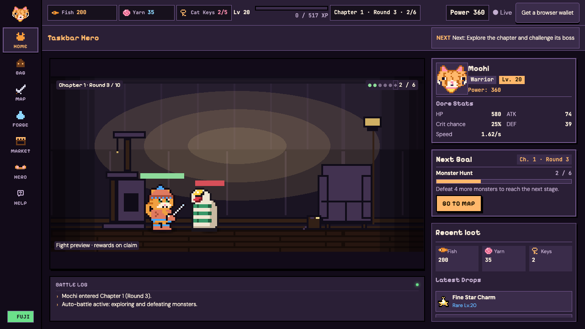
BEFORE · 1eefc3eAFTER · fb59d8aLarger art, quiet empty slots, inset plinths and labeled rarity tiers improve scanning. Equipment illustration itself is unchanged.

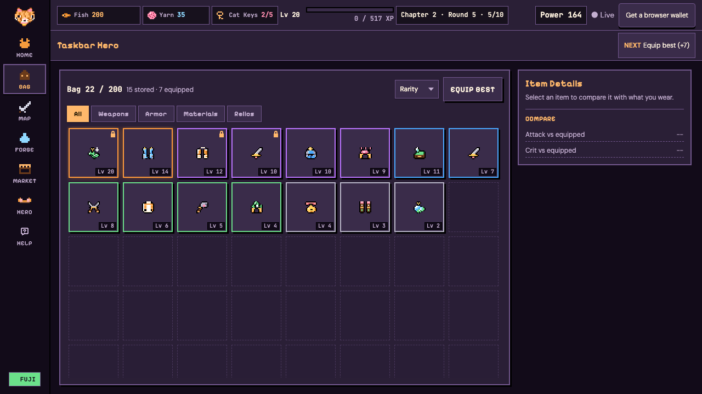
BEFORE · 1eefc3eAFTER · fb59d8aAn integer-scaled arena, chapter lighting, named boss, HP trail and bounded impact improve the encounter. A full household-boss redraw remains open.
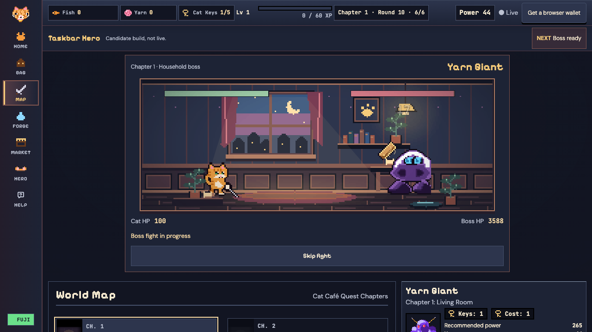
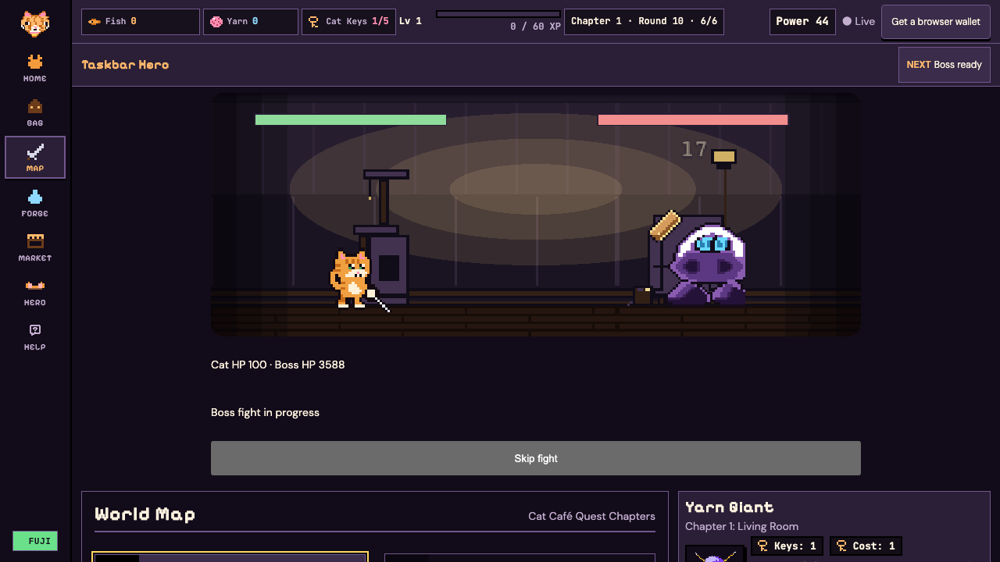
BEFORE · 1eefc3eAFTER · fb59d8aThe hearth gives the selected item a physical place and the three columns a clear center. Dense recipe controls remain the existing workflow.

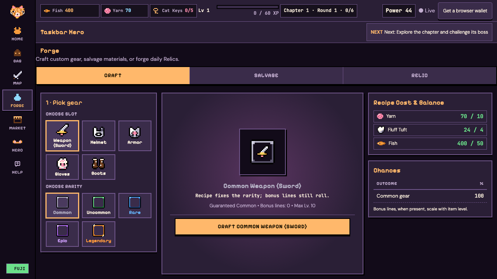
BEFORE · 1eefc3eAFTER · fb59d8aA larger collectible and warm selected row improve focus. The sparse listing table still feels administrative; no fictional listings were added.

 BEFORE · 1eefc3eAFTER · fb59d8a
BEFORE · 1eefc3eAFTER · fb59d8aA larger selected item, readable comparison and clear primary action. V2 upgrades through craft/equip; the separate classic Upgrade screen is unchanged and documented separately.
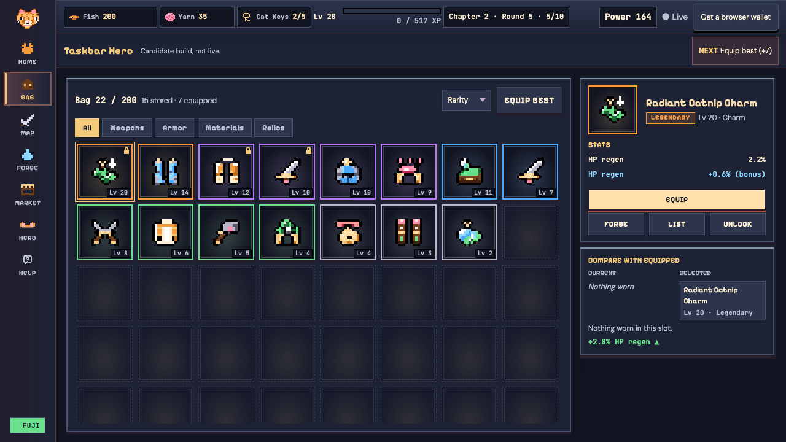
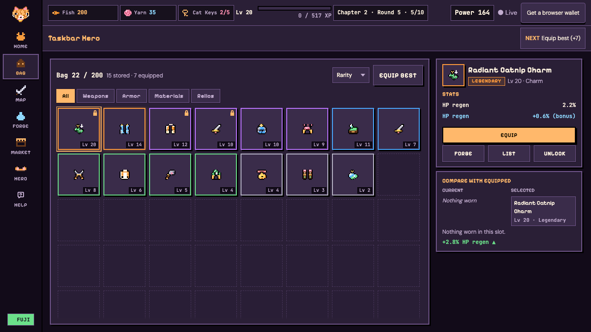
BEFORE · 1eefc3eAFTER · fb59d8aCollectible art is more prominent, with all contract facts retained. Existing metadata art remains unchanged and could gain more character later.
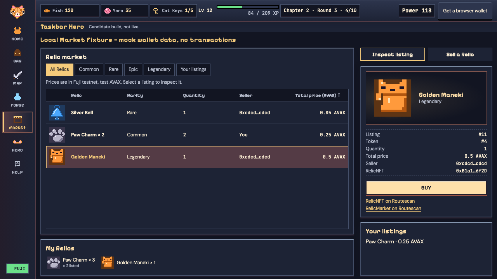
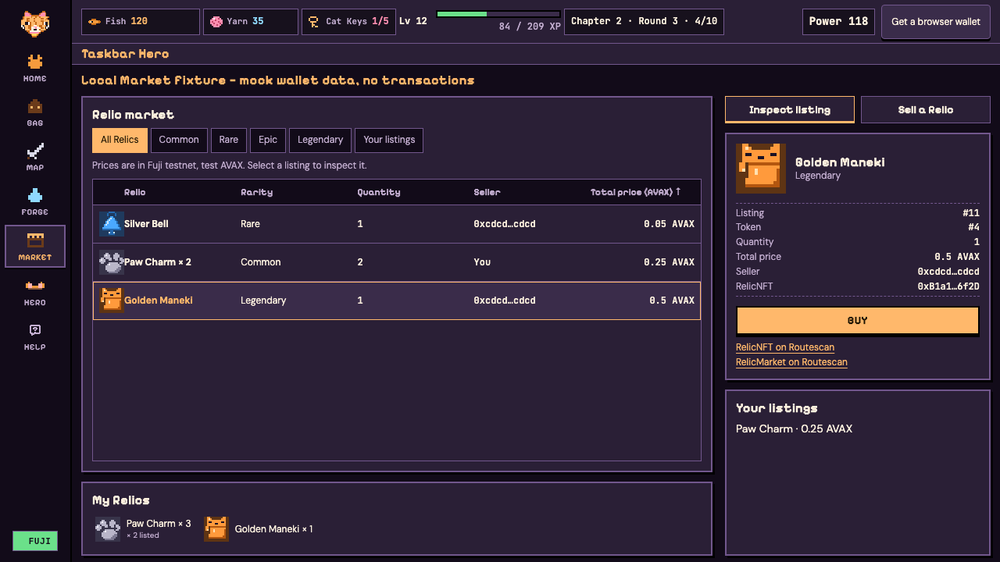
BEFORE · 1eefc3eAFTER · fb59d8aCrafted art, a warm reveal sweep and tiered fanfare connect the action to the result. The common result is deliberately restrained; bespoke great-success presentation remains open.

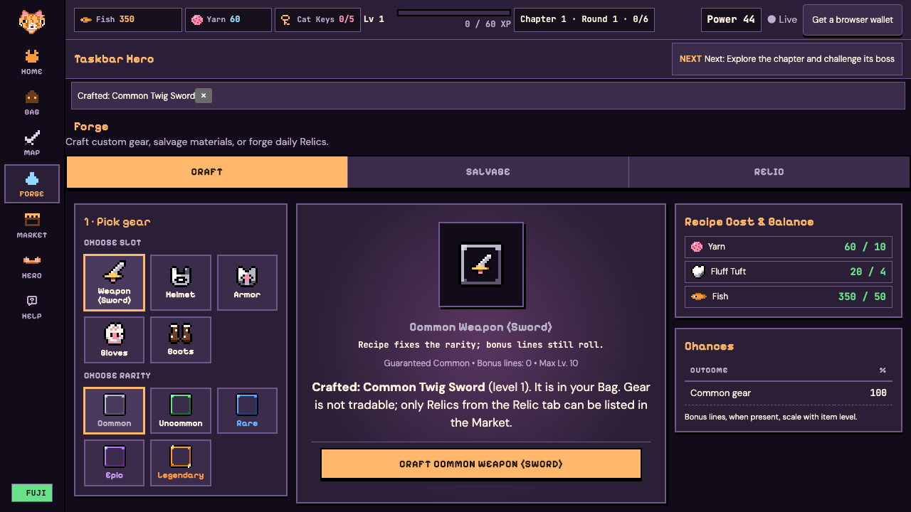
BEFORE · 1eefc3eAFTER · fb59d8aThis is the actual classic Upgrade screen, kept as an honest supplement. Its before/after PNGs are byte-identical at all three sizes. It is not part of the approved v2 layout or the upgraded-view score mean.
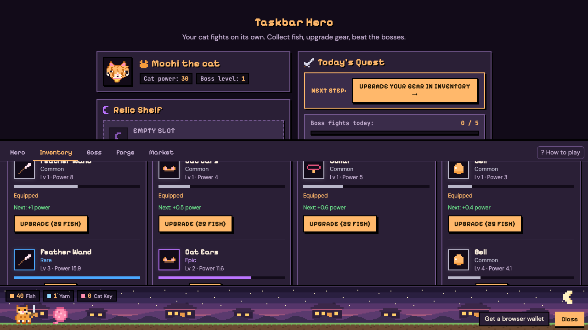
 BEFORE · 1eefc3eAFTER · fb59d8a
BEFORE · 1eefc3eAFTER · fb59d8a32 original colors. Integer pixels and selective ink outlines; the key light arrives from the upper left. Backgrounds share a 256 × 96 grid, the portrait uses 48 × 48 frames. Existing inherited item and boss art retains its original provenance.
Mythic is an art-direction sample only. It adds no game tier, item, or economy change. Rune, skill and companion previews stay labeled Sample and default-OFF.
Living room · amber window![Chapter 2: Kitchen · teal oven]() Kitchen · teal oven
Kitchen · teal oven![Chapter 3: Bathroom · reflected blue]() Bathroom · reflected blue
Bathroom · reflected blue![Chapter 4: Basement · wine lantern]() Basement · wine lantern
Basement · wine lantern![Chapter 5: Rooftops · indigo moon]() Rooftops · indigo moon
Rooftops · indigo moonEight captured frames from each real rendered animation. These loops replay sampled frames, not the original timing; the exact presentation times are recorded below. Reduced-motion preference shows a static frame. Hidden tabs pause all previews.
5 distinct frames · 0, 2800, 3360, 3640, 5600, 6720, 21840, 22680 ms
Open full frame strip ↗8 distinct frames · 0, 100, 200, 300, 400, 500, 600, 700 ms
Open full frame strip ↗7 distinct frames · 0, 70, 140, 210, 350, 480, 700, 1000 ms
Open full frame strip ↗Presentation rules: 60 ms critical pause, ≤2 rendered pixel shake, 16 impact particles, no sound. No combat time, damage, reward or server result changes.
Single-author visual review of pinned-font stills at 1280x720, 1440x900 and 1920x1080 plus rendered motion. Subjective, not independent user research. Scores describe each view, not the worst individual axis. Axis order: Focal point / Color harmony / Readability / Depth / lighting / Character appeal / Motion / feedback / Consistency.
| View | Before · seven axes | After · seven axes | Mean |
|---|---|---|---|
| Home / living room | 5 / 6 / 8 / 3 / 6 / 5 / 6 | 9 / 9 / 9 / 9 / 8 / 8 / 9 | 5.6 → 8.7 |
| Inventory | 5 / 6 / 8 / 4 / 5 / 5 / 6 | 8 / 8 / 9 / 8 / 8 / 8 / 8 | 5.6 → 8.1 |
| Boss fight | 6 / 6 / 8 / 4 / 6 / 6 / 6 | 9 / 9 / 9 / 9 / 8 / 8 / 8 | 6.0 → 8.6 |
| Forge | 5 / 6 / 8 / 4 / 4 / 5 / 6 | 9 / 9 / 9 / 8 / 8 / 8 / 8 | 5.4 → 8.4 |
| Market | 5 / 6 / 8 / 4 / 5 / 5 / 6 | 8 / 8 / 9 / 8 / 7 / 8 / 8 | 5.6 → 8.0 |
| Gear detail / v2 upgrade path | 5 / 6 / 8 / 4 / 5 / 5 / 6 | 8 / 8 / 9 / 8 / 8 / 8 / 8 | 5.6 → 8.1 |
| Relic detail | 6 / 6 / 8 / 4 / 6 / 5 / 6 | 8 / 8 / 9 / 8 / 8 / 8 / 8 | 5.9 → 8.1 |
| Forge reveal | 6 / 6 / 8 / 4 / 5 / 6 / 6 | 9 / 9 / 9 / 8 / 8 / 8 / 8 | 5.9 → 8.4 |
All upgraded views average at least 8.0. The requested 9+ target for Home, boss and Forge reveal is still open: their current means are 8.7, 8.6 and 8.4. Next: unify the gameplay Mochi with the new portrait, redraw the bosses, add a distinct great-success flourish and validate preference with players. Classic Upgrade is unchanged; V2 has craft/equip progression.
Typecheck and lint pass. Web units: 1,471 passed on isolated rerun; the first concurrent run had one timeout. Effects checks: about 60 fps, zero layout shift. Five-minute soak: 59.95 minimum average fps; JS gzip delta 2,343 bytes. Market and Relic evidence uses a labeled local mock-wallet fixture. No transactions were sent.
All 19 PNGs below are authored by tools/art/visual.py, using seed 0, the locked palette, integer coordinates and lossless PNG encoding. Exact shape and alpha parameters are committed source. No external game art, traced reference, generated-image input or audio.
Brief: “An original evening cat café atelier: dusk window, moon and tiny rooftops, plum curtains, walnut wainscot, books and paw portrait, tea cup, leafy planters, a rug for a brave tabby. Five household moods. Mochi wears a blue scarf and golden bell. Light arrives from upper left.”
| Asset · apps/web/public/art/visual/ | Bytes | SHA-256 prefix | Date / generator |
|---|---|---|---|
foreground-1.png | 393 | 3fa5fa5640d7ed8f | 2026-11-04 · visual.py |
foreground-2.png | 393 | 3fa5fa5640d7ed8f | 2026-11-04 · visual.py |
foreground-3.png | 393 | 3fa5fa5640d7ed8f | 2026-11-04 · visual.py |
foreground-4.png | 393 | 3fa5fa5640d7ed8f | 2026-11-04 · visual.py |
foreground-5.png | 393 | 3fa5fa5640d7ed8f | 2026-11-04 · visual.py |
forge-hearth.png | 501 | a4e97fd0a2a72ffa | 2026-11-04 · visual.py |
light-1.png | 663 | 4deda4ebdc85927c | 2026-11-04 · visual.py |
light-2.png | 663 | 4deda4ebdc85927c | 2026-11-04 · visual.py |
light-3.png | 663 | 58102f5db24ca81f | 2026-11-04 · visual.py |
light-4.png | 663 | 17de5bd5d3d70ece | 2026-11-04 · visual.py |
light-5.png | 663 | 4deda4ebdc85927c | 2026-11-04 · visual.py |
mochi-idle.png | 1294 | ce7c7b582344fc5a | 2026-11-04 · visual.py |
mochi.png | 442 | ef46db6827bdc108 | 2026-11-04 · visual.py |
room-1.png | 1085 | 6c3264e100cfd39b | 2026-11-04 · visual.py |
room-2.png | 1197 | 5c46c62ca2a42aa8 | 2026-11-04 · visual.py |
room-3.png | 1293 | 00f694948293306a | 2026-11-04 · visual.py |
room-4.png | 1381 | 53a161732baf14a2 | 2026-11-04 · visual.py |
room-5.png | 906 | 9c3366f526c30b7f | 2026-11-04 · visual.py |
shade.png | 1134 | b7340884b476d228 | 2026-11-04 · visual.py |
Screenshot and strip parameters: seed 1404, fixed time 2026-11-04 11:30 UTC, local fixtures, exact existing font hashes, frozen presentation. Full hashes for all 57 evidence PNGs: gallery-manifest.json. Full provenance: asset-provenance.md.
This file works offline by double-clicking. Keep the adjacent img/ folder. To run the real candidate in guest/demo mode, use the visual worktree:
cd /Users/bao/taskbar-hero-visual VITE_GAME_V2=1 VITE_ALLOW_MOCK_AUTH=1 VITE_SUPABASE_URL= VITE_SUPABASE_ANON_KEY= \ pnpm --filter @taskbar-hero/web exec vite --host 127.0.0.1 --port 5380 --strictPort # Open http://127.0.0.1:5380/?demo#home
Read the delivery report · Full art bible · Research and baseline audit